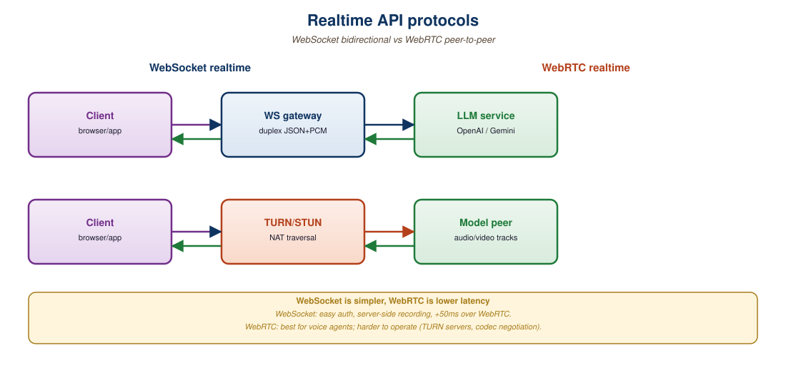

"The protocols are 60% the same. The 40% difference is where production engineering hours go."
Echo, Realtime-Wrangling AI Agent
Both GPT-4o Realtime and Gemini Live expose a WebSocket-based, event-driven protocol for streaming audio and tool calls. The shapes are similar: open a session with configuration, push audio frames over the socket, receive incremental text and audio deltas. The differences are in turn-detection semantics, function-calling shape, session state model, and the audio-codec format. This section walks through both protocols side-by-side with executable code, then covers the production patterns (reconnection, partial-state recovery, tool dispatch) that distinguish a demo from a shipping product.
Prerequisites
This section assumes the speech-recognition and TTS pipelines from Section 20.1 and Section 20.5, the frontier-API patterns from Section 14.1, and the streaming-API patterns from Section 11.4.

40.3.1 Protocol Overview
GPT-4o Realtime and Gemini Live both ship over WebSockets, but they disagree on almost everything else: frame size, codec, event names, and whether the model can interrupt the user. The disagreement is not architectural; it is brand. Each vendor wants their SDK to be the one developers learn first.
Both APIs use a long-lived WebSocket connection. Once authenticated, the client sends a session-update event with configuration (voice, modalities, tools, system prompt), then streams audio chunks. The server emits incremental events as the model processes input and generates output.
The minimal event types are:
| Concept | GPT-4o Realtime | Gemini Live |
|---|---|---|
| Session config | session.update | BidiGenerateContentSetup |
| Send audio chunk | input_audio_buffer.append | realtimeInput.audio |
| Send text chunk | conversation.item.create | clientContent.turns |
| Commit audio turn | input_audio_buffer.commit + response.create | Implicit (server VAD) |
| Server emits text | response.text.delta | serverContent.modelTurn.parts.text |
| Server emits audio | response.audio.delta | serverContent.modelTurn.parts.inlineData |
| Function call | response.function_call_arguments.delta | toolCall.functionCalls |
| Function result | conversation.item.create (function_call_output) | toolResponse.functionResponses |
| Interruption (user spoke) | input_audio_buffer.speech_started | serverContent.interrupted |
40.3.2 GPT-4o Realtime: Full Walkthrough
The GPT-4o Realtime endpoint is wss://api.openai.com/v1/realtime?model=gpt-4o-realtime-preview. Authentication is via a standard bearer token plus the OpenAI-Beta: realtime=v1 header. The minimal full lifecycle:
import asyncio, json, base64, os
import websockets
URL = "wss://api.openai.com/v1/realtime?model=gpt-4o-realtime-preview"
HEADERS = {
"Authorization": f"Bearer {os.environ['OPENAI_API_KEY']}",
"OpenAI-Beta": "realtime=v1",
}
async def run():
async with websockets.connect(URL, extra_headers=HEADERS) as ws:
# 1. Configure session: enable both modalities, set voice and tools.
await ws.send(json.dumps({
"type": "session.update",
"session": {
"modalities": ["text", "audio"],
"voice": "shimmer",
"input_audio_format": "pcm16",
"output_audio_format": "pcm16",
"turn_detection": {"type": "server_vad", "threshold": 0.5},
"instructions": "You are a helpful assistant.",
"tools": [{
"type": "function",
"name": "lookup_weather",
"description": "Get weather for a city",
"parameters": {"type": "object",
"properties": {"city": {"type": "string"}}},
}],
},
}))
# 2. Stream microphone audio in 100ms chunks (16kHz PCM-16).
mic_task = asyncio.create_task(stream_mic(ws))
# 3. Receive server events and play audio output.
async for raw in ws:
ev = json.loads(raw)
if ev["type"] == "response.audio.delta":
pcm = base64.b64decode(ev["delta"])
speaker.write(pcm)
elif ev["type"] == "response.function_call_arguments.done":
result = await handle_tool(ev["name"],
json.loads(ev["arguments"]))
await ws.send(json.dumps({
"type": "conversation.item.create",
"item": {
"type": "function_call_output",
"call_id": ev["call_id"],
"output": json.dumps(result),
},
}))
await ws.send(json.dumps({"type": "response.create"}))
elif ev["type"] == "input_audio_buffer.speech_started":
speaker.flush() # interruptionserver_vad turn detection, you do not have to commit audio buffers manually; the server detects end-of-speech and emits a response. Function calls round-trip via conversation.item.create with the function_call_output item type.40.3.3 Gemini Live: Full Walkthrough
Gemini Live uses a similar WebSocket pattern but with Google's bidi-streaming envelope. The endpoint is wss://generativelanguage.googleapis.com/ws/google.ai.generativelanguage.v1beta.GenerativeService.BidiGenerateContent. Authentication is via API key as a query parameter.
from google import genai
import asyncio
client = genai.Client(api_key=os.environ["GOOGLE_API_KEY"])
MODEL = "models/gemini-2.5-flash-live-preview"
async def run():
config = {
"response_modalities": ["AUDIO"],
"speech_config": {"voice_config":
{"prebuilt_voice_config": {"voice_name": "Aoede"}}},
"system_instruction": {"parts":
[{"text": "You are a helpful assistant."}]},
"tools": [{"function_declarations": [
{"name": "lookup_weather",
"description": "Get weather for a city",
"parameters": {"type": "OBJECT",
"properties": {"city": {"type": "STRING"}}}}
]}],
}
async with client.aio.live.connect(model=MODEL, config=config) as session:
# 1. Mic streaming task
async def send_audio():
async for chunk in mic_chunks():
await session.send_realtime_input(
audio={"data": chunk, "mime_type": "audio/pcm"}
)
asyncio.create_task(send_audio())
# 2. Receive loop
async for resp in session.receive():
if resp.data:
speaker.write(resp.data) # PCM audio chunk
if resp.tool_call:
for call in resp.tool_call.function_calls:
result = await handle_tool(call.name, call.args)
await session.send_tool_response(
function_responses=[{"id": call.id,
"name": call.name, "response": result}]
)
if resp.server_content and resp.server_content.interrupted:
speaker.flush()STRING, OBJECT).40.3.4 Session Management and Reconnection
Production realtime clients must survive transient WebSocket disconnects. Both APIs let you continue a session by replaying the conversation history on a new connection:
- GPT-4o Realtime: replay
conversation.item.createevents for each prior turn on the new socket, then resume audio streaming. - Gemini Live: pass the prior turns in
clientContent.turnsas the first send on the new session.
Neither API persists session state server-side beyond the WebSocket lifetime. The client owns the conversation history, which simplifies the data model (no session IDs to manage) but means the client must implement reconnection logic carefully. Production patterns typically save the running transcript to a database every few turns so a refresh or device handoff can resume cleanly.
Each provider enforces a maximum session duration (currently 30 minutes for GPT-4o Realtime, 15 minutes for Gemini Live, both subject to change). Long-running voice agents must implement transparent session rotation: open a new socket before the old one expires, transfer the conversation context, and switch the audio stream over with minimal perceived gap. The pattern looks like a TCP handoff; expect to spend an afternoon getting it right.
40.3.5 Function Calling in Realtime
Function calling in a streaming audio context introduces a unique problem: the model wants to call a function mid-speech, but the function call blocks the audio response. Both APIs handle this by emitting a function-call event mid-stream, expecting the client to respond with a function output, and then resuming audio generation.
Best practices that emerged in 2025:
- Acknowledge before calling: prompt the model to say a brief "let me check" before invoking a tool, so the user perceives responsiveness while the tool runs.
- Parallel function dispatch: if multiple tools can be called, dispatch them in parallel rather than serially.
- Streaming tool results: for long-running tools, send incremental partial results so the model can begin speaking before the tool fully resolves.
- Timeouts: enforce a max latency on tool calls. If the weather API takes more than 1 second, return a "weather lookup pending" placeholder so the conversation does not stall.
Without a verbal acknowledgment, the user perceives a silent gap during tool execution. With "let me check that for you" emitted by the model before the tool call, the gap is filled with natural speech and the perceived latency drops dramatically even if the tool is slow. The trick is in the system prompt: instruct the model to always preface tool calls with a brief verbal acknowledgment. Both APIs honor this pattern reliably.
40.3.6 Debugging and Observability
Realtime APIs are noisier than text APIs and harder to debug. Recommended observability:
- Log every event with timestamps: server-side timing tells you where latency lives in the stack.
- Record audio in and out: optionally save the user's input audio and the model's output audio so you can replay session failures.
- Track TTFB and TTLB: time-to-first-byte (audio) and time-to-last-byte for each turn.
- Monitor server-side events:
error,response.done, andconversation.item.truncatedevents indicate something went wrong.
# Minimal observability wrapper for either realtime API.
# Logs every event with monotonic-clock timestamps to a JSONL file.
import time, json
class EventLogger:
def __init__(self, path):
self.f = open(path, "a")
self.t0 = time.monotonic()
def log(self, direction, event):
elapsed_ms = (time.monotonic() - self.t0) * 1000
self.f.write(json.dumps({
"t_ms": round(elapsed_ms, 1),
"dir": direction,
"type": event.get("type") or type(event).__name__,
"summary": str(event)[:200],
}) + "\n")
self.f.flush()logger.log("out", payload) or logger.log("in", event). The resulting JSONL is invaluable for diagnosing latency spikes and protocol-level mismatches.Both APIs accept PCM-16 mono at specific sample rates (24 kHz for GPT-4o output, 16 kHz for Gemini Live input). Sending audio at the wrong rate gets you no error: the server processes the bytes as though they were the expected rate, and the model produces garbage output. Always log the sample rate from your audio capture chain and add an assertion at the WebSocket boundary.
Who: A 2025 customer-support startup running a voice agent in production on a single realtime provider.
Situation: Leadership wanted to A/B test GPT-4o Realtime versus Gemini Live in production to find the cheaper provider for their actual workload mix.
Problem: The two APIs used different event names, schemas, voice IDs, and audio formats, so the application code was tightly bound to whichever provider was wired in first.
Dilemma: Either fork the codebase and run two parallel deployments (high engineering cost, hard to A/B test), or build a thin abstraction and risk the leaky-abstraction tax for the gain in flexibility.
Decision: They built a thin adapter layer rather than forking the application.
How: The adapter was about 600 lines of Python exposing a unified RealtimeSession interface with methods send_audio, send_tool_response, and an async iterator of AudioChunk, ToolCall, and InterruptionEvent objects, normalizing voice IDs, sample rates, and function-call schemas.
Result: The A/B test showed Gemini Live was 18% cheaper for their workload but had higher TTFB; they shipped a mixed-provider stack with intelligent routing based on conversational urgency.
Lesson: A thin adapter over realtime providers is one of the highest-leverage engineering investments for any voice product, because it converts provider choice from an architectural commitment into a per-request routing decision.
GPT-4o Realtime and Gemini Live share the same conceptual primitives, WebSocket session, streaming audio, server-VAD turn detection, function calling, but differ in event names, schemas, and SDKs. Production code should wrap them in a thin adapter so you can switch or A/B test. Session management is client-owned; both APIs cap sessions at 15 to 30 minutes and require client-side reconnection. Function calling needs an acknowledgment pattern to avoid silent gaps. Instrument every event with timestamps; audio sample-rate mismatches are silent failures that observability catches before users do.
Show Answer
Show Answer
Show Answer
Show Answer
What Comes Next
Section 40.4: Audio Token Budget and Latency Engineering goes one layer deeper into the audio token economics: codec choice, token rate, voice-activity tuning, and the math behind sub-300-ms TTFT.